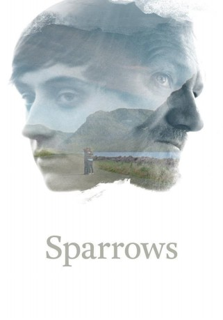

#10009 Spatzen *OmU*
Alternativ: Sparrows (Originaltitel)
 
 IMDB-Wertung: 6.9 / 10
IMDB-Wertung: 6.9 / 10  Metascore: 0
Metascore: 0 
A coming-of-age story about the 16-year old boy Ari, who has been living with his mother in Reykjavik and is suddenly sent back to the remote Westfjords to live with his father Gunnar. There, he has to navigate a difficult relationship with his father, and he finds his childhood friends changed. In these hopeless and declining surroundings, Ari has to step up and find his way.
mit deutschen Untertiteln
Jahr: 2015
Dauer: 92 Minuten
FSK:
Land: Island Studio: PeripherTonspuren:
Untertitel:
Auflösung: 720p (1280x692) Größe: 2508 MB
Genre: Drama
Regisseur: Rúnar Rúnarsson
Drehbuch: Rúnar Rúnarsson
Soundtrack: Kjartan Sveinsson
Darsteller:
 Rade Serbedzija als Tomislav
Rade Serbedzija als Tomislav Ingvar Eggert Sigurðsson als Gunnar
Ingvar Eggert Sigurðsson als Gunnar- Atli Oskar Fjalarsson als Ari
- Arna Magnea Danks als Bassi's onkel
 Nanna Kristín Magnúsdóttir als Kristjana
Nanna Kristín Magnúsdóttir als Kristjana- Kristbjörg Kjeld als Grandmother
- Jarkko Lahti als Darijo
- Pálmi Gestsson als Diddi
- Eva Sigurdardottir als Dance Competitor
- Rakel Björk Björnsdóttir als Lára
- Arndís Hrönn Egilsdóttir als Vera
- Katla M. Þorgeirsdóttir als Ösp
- Víkingur Kristjánsson als Dagur
- Eyþór Jóvinsson als Gunnar's friend
- Elín Árnadóttir als María
- Valgeir Skagfjörð als Bassi
- Júlíus Þorfinnsson als Kormákur
- Benedikt Benediktson als Einar
Datei: X:\2015(N-Z)\Spatzen OmU (2015, FSK, 1280x692).mkv seit 20.11.2018
Festplatte: HD 2015(A-Z)
 Es gibt insgesamt 161 Filme in der Gruppe '2015(N-Z)'
Es gibt insgesamt 161 Filme in der Gruppe '2015(N-Z)'